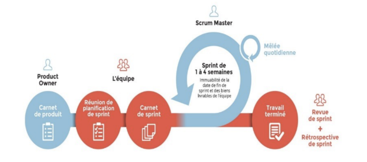
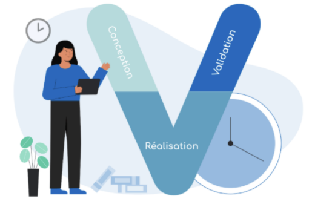
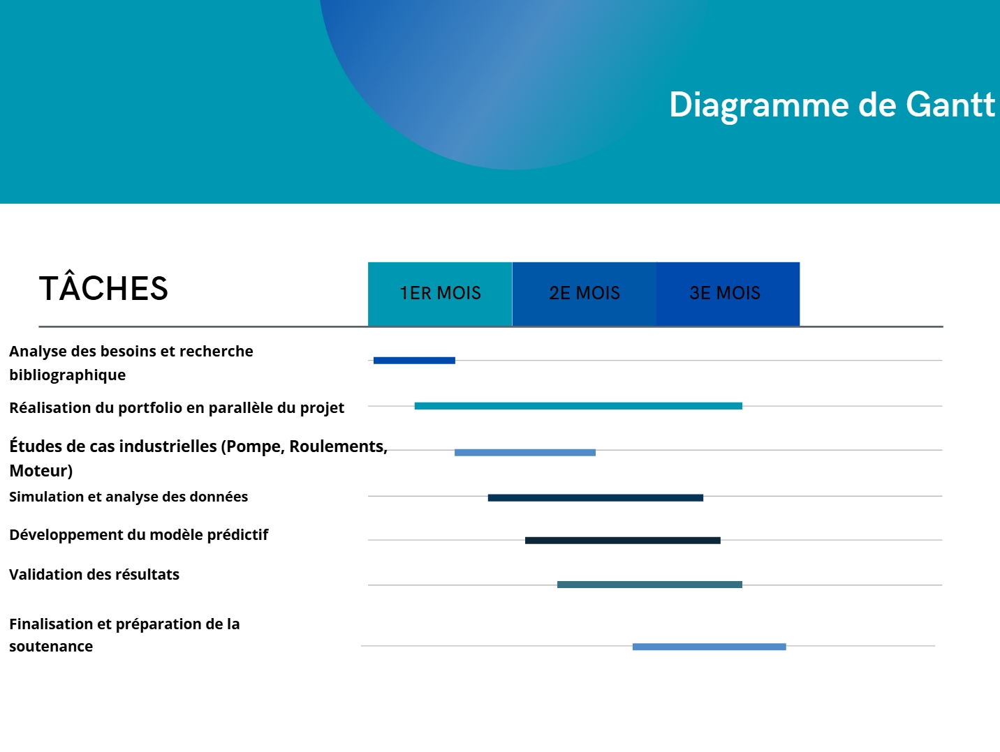

Pour ce projet, nous avons adopté une approche hybride combinant la méthodologie Agile (Scrum) et le cycle en V. Cette combinaison permet de bénéficier de la flexibilité de Scrum pour les itérations rapides et de la rigueur du cycle en V pour la validation à chaque étape clé.
Scrum est une méthode agile basée sur des itérations courtes appelées sprints. Chaque sprint permet de livrer une partie fonctionnelle, favorisant la collaboration, la communication et l’adaptabilité aux changements.

Le cycle en V est une méthode structurée et linéaire qui garantit la vérification et la validation à chaque niveau. Il se décompose en trois grandes phases :

Après avoir défini les méthodologies, nous avons utilisé un diagramme de Gantt pour planifier les tâches, identifier les dépendances, gérer les priorités et assurer un suivi efficace tout au long du projet.
